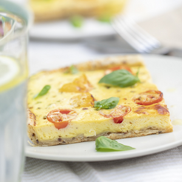

Tarta soufle de queso y tomates cherry con masa de semillas

- 1 taza de Harina
- 1/4 taza de Aceite de Oliva
- 1/4 taza de Agua
- 1 Cucharadita de Sal fina
- 2 Cucharaditas de Mix de semillas
- 4 Huevos
- 150 grs de Queso en hebras
- 3 Cucharadas de Queso crema
- C/N Sal fina
- C/N Pimienta
- 100 grs de Tomate cherry
- En un bowl colocar la harina, la cucharadita de sal y el mix de semillas.
- Realizar un hueco en el centro e incorporar el aceite y el agua comenzar a amasar hasta lograr un bollo liso.
- Tapar y dejar descansar la masa 15 minutos.
- En un bowl batir los huevos hasta espumar.
- Incorporar el queso rallado en hebras y el queso crema.
- Salpimentar e integrar bien.
- Estirar la masa con ayuda de un palo de amasar y colocarla sobre la Flip.
- Volcar el relleno sobre la masa y por encima los tomates cherry cortados a la mitad.
- Tapar la Flip y cocinar a fuego corona por aproximadamente 40 minutos.
- Desmoldar y cortar en cuadrados, acompañar si se desea con ensalada.